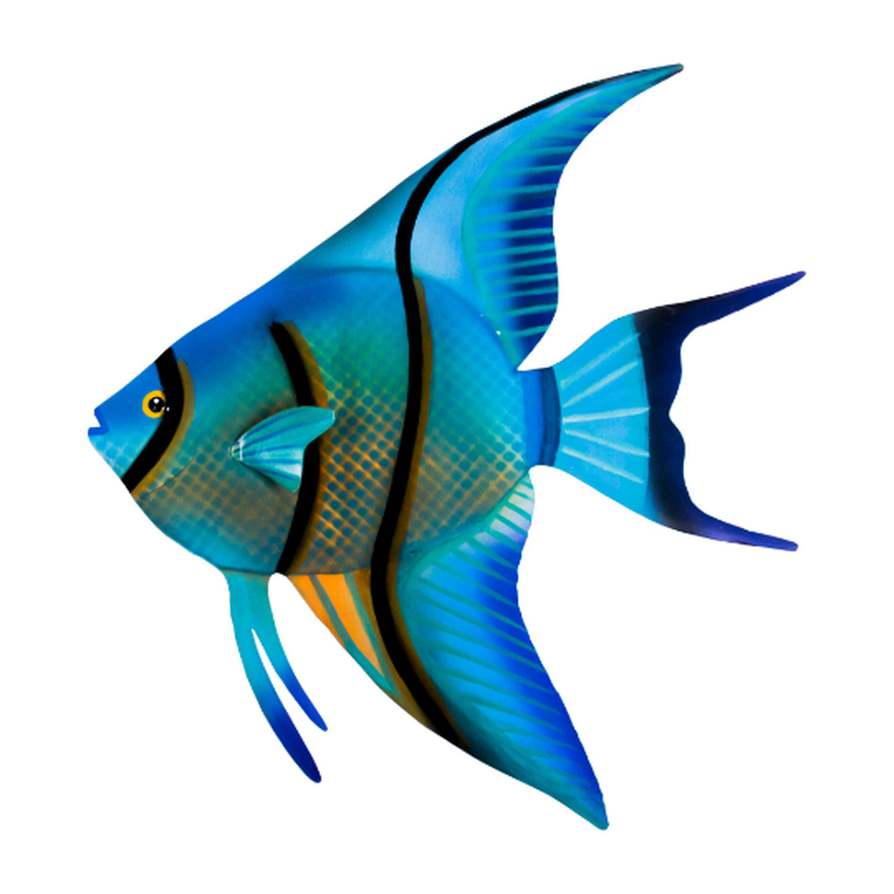
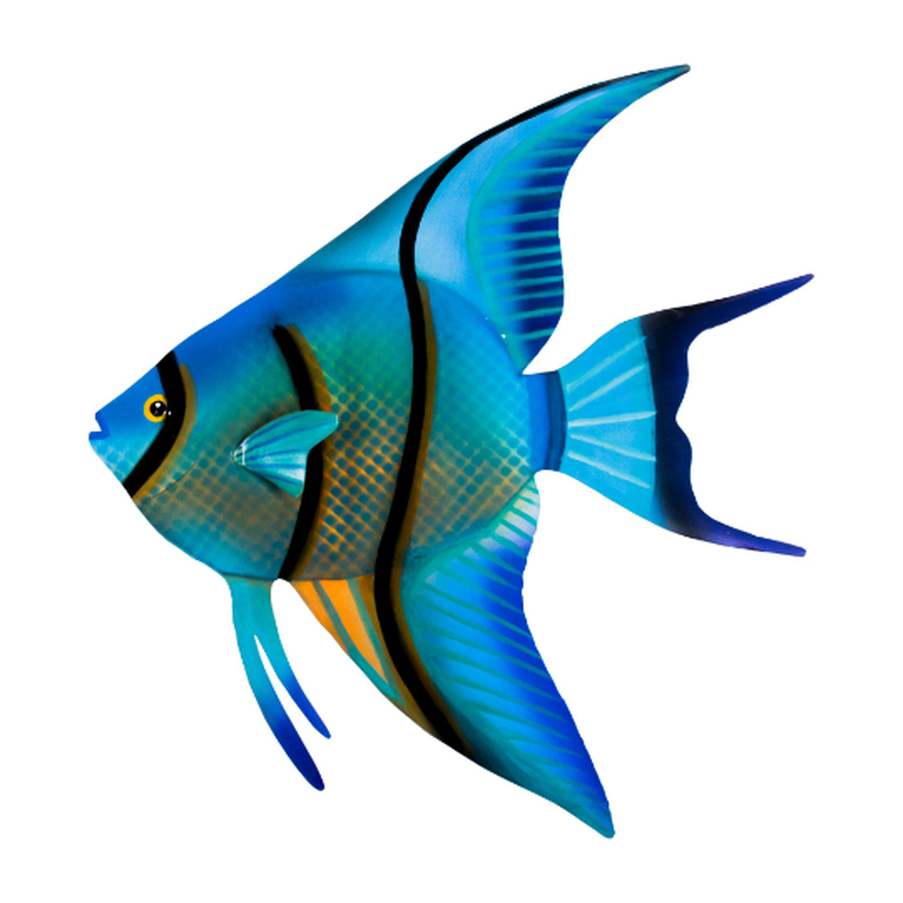
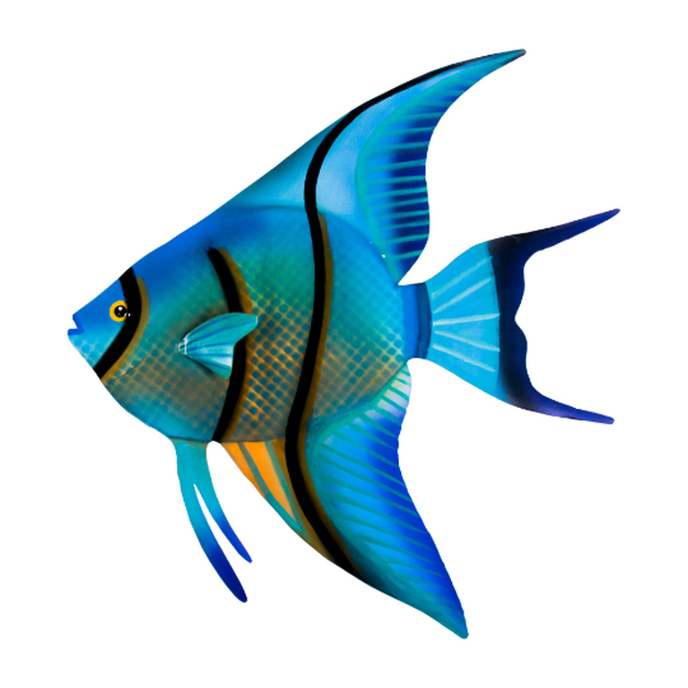
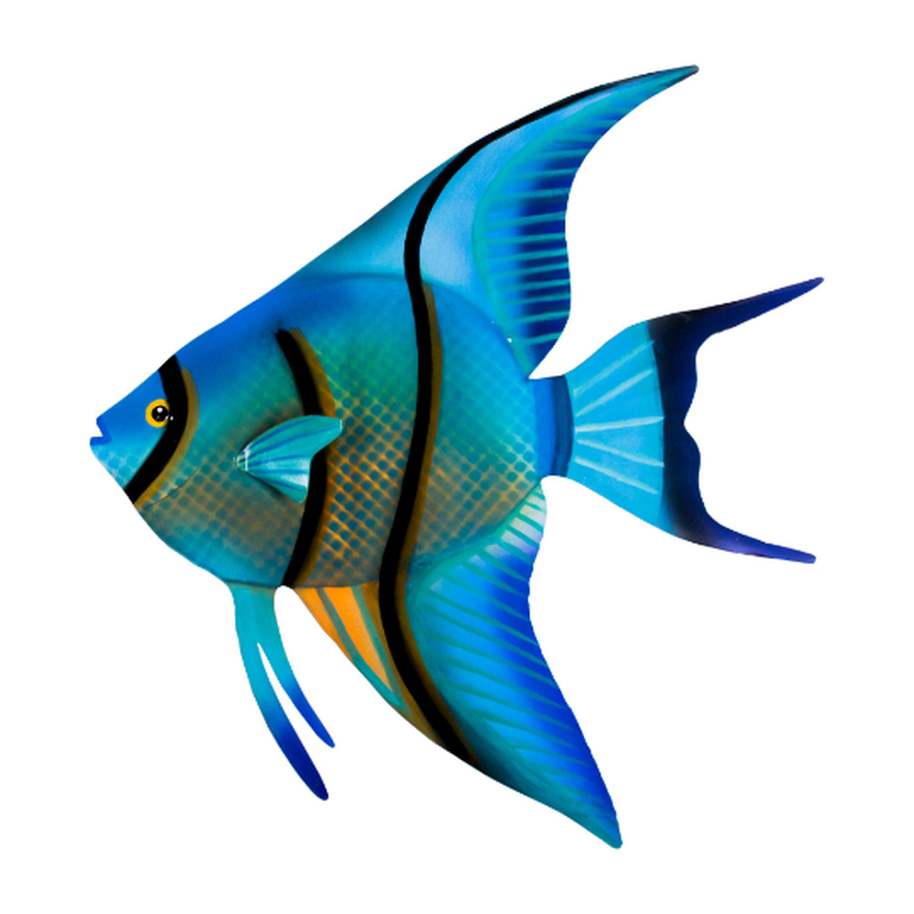

Projects
 



 


I am currently taking part in an Online Coding Boot Camp with the determination to be a Full Stack Programmer.
Throughout my careers, I continually re-evaluate how I can effectively provide value by broading my knowledge of the skills needed to do my job. I am a strong believer in you learn something new everyday.
rltrosas88@gmail.com LinkedIn Profile
I graduated from the University of Texas Pan-American with a bachelors in Music Education. I taught band to students from 6th grade through 12th grade in a public school setting for 8 years. I have a cat named Blue and my interest range from traveling to reading.